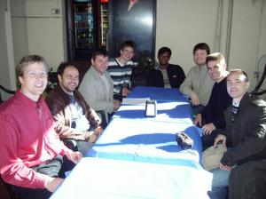

Since weather was sunny, we started the second day with some sight-seeing of Genoa with Angelo, Sare and Marcel. Genoa is a nice place, I really need to come back with my family for further visiting.
I continued working on the HTML Export plugin. This time I reworked the image resizing code to use QtConcurrent. Generating a gallery for my test image set (51 3.8 megapixels images) used to take 30 seconds on my Dual Core 1Ghz machine. It's now down to 20. I am quite happy with it.
Yesterday was All Saints day. Most shops were closed, so it was a bit difficult to find some food. After wandering around in the streets for a while, we finally settled in a bar which treated us with great Pesto Penne, complete with extra in a big bowl for the hungriest among us. We had a nice time, except for the part when the waitress spilled Gilles beer over my trousers!
Work continued on Digikam Windows port, and the Picasa and Gallery exports. Valerio finished porting of normal (non OpenGL) effects of the Slideshow plugin. Good stuff. Angelo carried on with the KDE4 port of the print wizard.
In the evening we went to a really nice restaurant where we eat great pizza and pasta. Italians seem to like laaarge pizza :)
{kind=link}
{kind=link}